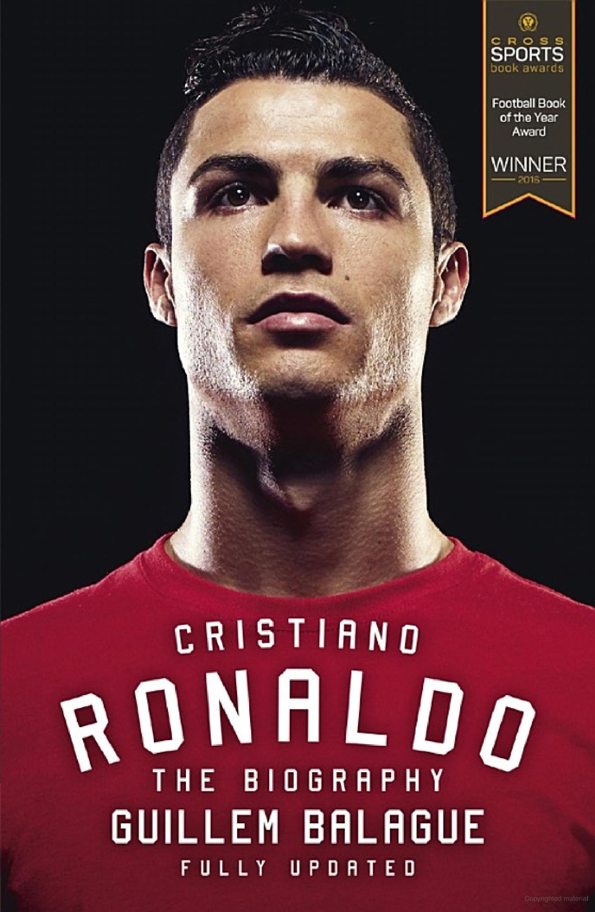
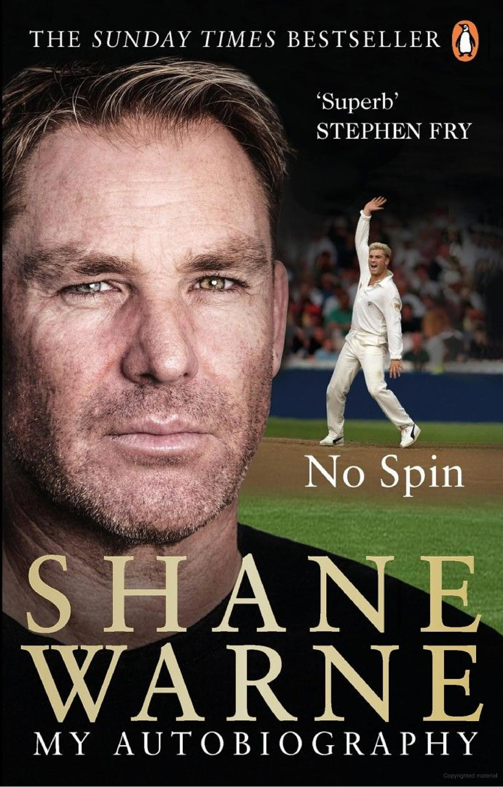

Playing It My Way
Sachin Tendulkar

Immerse yourself in the captivating world of cricket and indulge in the remarkable journey of Sachin Tendulkar by reading "Playing It My Way." This autobiography is a compelling masterpiece that transcends the boundaries of sport. Delve into Tendulkar's extraordinary life, from his humble beginnings to his rise as a cricketing legend. With riveting anecdotes and personal stories, this book offers an intimate glimpse into the mind of a sporting icon. Prepare to be inspired as Tendulkar's unwavering dedication, relentless pursuit of perfection, and unwavering focus become your guiding principles. Discover the secrets behind his unmatched success, and uncover the grit and determination that made him a national hero. "Playing It My Way" is not merely a book—it's an enthralling narrative that will leave you spellbound, celebrating the triumphs and tribulations of a true champion. So, grab a copy, and prepare to be captivated by the magic that unfolds within its pages.
Lionel Messi: The Biography
Leonardo Faccio
For soccer enthusiasts and sports fans in general, "Lionel Messi: The Biography" by Leonardo Faccio offers an unparalleled glimpse into the life of the greatest star in the beautiful game. With awe-inspiring athleticism, exceptional skill, and an unwavering competitive spirit, Lionel Messi has mesmerized fans worldwide and redefined what it means to be a footballer. Faccio, an Argentine journalist, takes readers on a captivating journey, chronicling Messi's humble beginnings in Buenos Aires and his determination to overcome adversity. From his relocation to Spain in pursuit of medical treatment to his rise through Barcelona's prestigious youth academy, the Masia, this biography sheds light on the triumphs and challenges that shaped Messi's path to superstardom. Drawing upon interviews with Messi himself, as well as family members, teammates, and childhood friends, Faccio paints an intimate portrait of the enigmatic celebrity and explores the essence of athletic genius. This book offers an in-depth exploration of Messi's personal and professional life, allowing readers to connect with the man behind the accolades. Whether you marvel at his wizardry on the field or simply admire his extraordinary journey, "Lionel Messi: The Biography" promises to captivate and inspire fans as Messi's story unfolds on the page.
Ronaldo: The Biography
Guillem Balagué
Immerse yourself in the captivating world of Cristiano Ronaldo with "Ronaldo: The Biography" by Guillem Balagué. This comprehensive and authoritative account takes you on an unforgettable journey through the life and career of one of football's greatest icons. Balagué's meticulous research and exclusive access to Ronaldo and his inner circle provide unparalleled insights into the personal experiences, motivations, and challenges that shaped this legendary player. From his humble beginnings to his rise to global stardom, this biography unravels the myth surrounding Ronaldo, offering a balanced and nuanced portrayal of the man behind the headlines. Brace yourself for an inspiring and compelling read that celebrates Ronaldo's unwavering dedication, relentless pursuit of excellence, and enduring impact on the beautiful game.
The Dhoni Touch: Unravelling the Enigma That Is Mahendra Singh Dhoni
Bharat Sundaresan

Prepare to embark on an extraordinary journey into the enigmatic world of Mahendra Singh Dhoni with "The Dhoni Touch: Unravelling the Enigma That Is Mahendra Singh Dhoni." This captivating biography is a gateway to understanding the mind and spirit of one of cricket's most intriguing personalities. As you delve into the pages of this book, you will be mesmerized by Dhoni's awe-inspiring rise from a small-town boy to the revered captain of the Indian cricket team. With compelling storytelling and intimate insights, the book unravels the layers of Dhoni's enigma, revealing the unique leadership style, exceptional decision-making abilities, and the uncanny ability to thrive under pressure that earned him the title of "Captain Cool." Dhoni's extraordinary cricketing journey is more than just a story of success; it is a testament to the power of self-belief and the importance of staying grounded amidst adulation. Get ready to be inspired as "The Dhoni Touch" takes you on an unforgettable ride, where you will witness the triumphs, the challenges, and the sheer magic that defines the legend of Mahendra Singh Dhoni.
El diego
Dieogo Maradona
Discover the captivating world of Diego Maradona, one of football's most enigmatic and talented stars, by immersing yourself in the pages of "El Diego." This autobiography provides a first-hand account of Maradona's extraordinary life, filled with triumphs, controversies, and moments of pure genius. Through his words, you'll gain unparalleled insight into his footballing genius, his unrivaled skills, and the sheer audacity that made him a true legend of the sport. Experience the thrill of his World Cup triumph in 1986, relive his iconic goals, and witness the impact he had on the game. "El Diego" is not just a book, but a gateway into the mind and soul of a footballing deity, inviting you to understand the incredible journey of a man who captured the hearts of millions and left an indelible mark on the sport.
Why Soccer Matters
Edson Arantes do Nascimento
Discover the extraordinary life and insights of Edson Arantes do Nascimento, famously known as Pele, in his autobiography "Why Soccer Matters." With three World Cup championships and a record-breaking career, Pele shares his inspiring experiences, heartwarming stories, and a global vision for the sport's potential to unite and transform. In this concise and powerful book, Pele reveals why soccer holds immense significance, both on and off the field, leaving a lasting impact on the world.
Century Is Not Enough
Sourav Ganguly

Embark on an extraordinary literary odyssey through the captivating pages of "Century is Not Enough," a mesmerizing autobiography that delves into the life and mindset of the iconic Indian cricketer, Sourav Ganguly. Brace yourself for an immersive experience as Ganguly's compelling narrative unravels before your eyes, chronicling his remarkable journey from a tenacious young cricketer to the triumphant leader who revolutionized Indian cricket. With remarkable candor and unfiltered honesty, Ganguly shares the triumphs, setbacks, and personal anecdotes that shaped his career and defined his indomitable spirit. Prepare to be inspired as you witness the unwavering determination that transformed him into one of India's most influential cricketing figures. Beyond the boundaries of cricket, this book offers profound life lessons on resilience, leadership, and the relentless pursuit of excellence. Through Ganguly's captivating storytelling, you'll gain a deeper appreciation for the dedication, sacrifice, and passion required to conquer one's dreams. "Century is Not Enough" is not just a book; it is a profound exploration of the human spirit, a testament to the belief that true success lies beyond mere statistics. So, immerse yourself in this captivating autobiography and discover the extraordinary story of Sourav Ganguly—a saga that will resonate with you long after you turn the final page.
I Am Zlatan Ibrahimovic
Zlatan Ibrahimovic
In this candid autobiography, Zlatan Ibrahimovic, one of football's most enigmatic and talented players, shares his life story, from his upbringing in Sweden to his experiences with some of the world's top football clubs. It offers insights into his remarkable career, his mindset, and his larger-than-life personality.
No Spin
Shane Warne
Embark on an extraordinary literary voyage through the captivating memoir, "No Spin," penned by the legendary cricketer, Shane Warne. Prepare to be enthralled as Warne unveils the highs and lows of his illustrious career, offering an unfiltered and intimate account of his life both on and off the cricket pitch. With unbridled honesty, he shares the triumphs, controversies, and personal struggles that shaped his journey, making "No Spin" a compelling read that transcends the boundaries of sport. As you delve into the pages, you'll be captivated by Warne's exceptional cricketing prowess, his mesmerizing spin bowling, and the tactical genius that earned him worldwide acclaim. Beyond the game, "No Spin" offers invaluable insights into the mind of a champion, revealing the grit, determination, and resilience required to overcome obstacles and achieve greatness. Warne's candid storytelling provides a rare glimpse into the inner workings of the cricketing world, shedding light on the strategic nuances, team dynamics, and the relentless pursuit of victory. Whether you're a cricket aficionado or simply seeking inspiration, "No Spin" is a literary masterpiece that will leave an indelible mark on your psyche. So, brace yourself for an enthralling adventure as you accompany Shane Warne on his extraordinary journey—a tale that celebrates the power of passion, perseverance, and the indomitable human spirit.
Paper Lion: Confessions of a Last-String Quarterback
George Plimpton

Step into the captivating world of American football with the classic sports memoir, "Paper Lion." Authored by George Plimpton, this remarkable book takes readers on a thrilling and unconventional journey as Plimpton immerses himself in the Detroit Lions' training camp, becoming an honorary member of the team. Prepare to be transported to the heart of the action as Plimpton's self-deprecating humor and vivid storytelling paint a vivid picture of his experiences on and off the field. With each page, you'll feel the adrenaline rush of being in the huddle, the exhilaration of competing against professional athletes, and the camaraderie forged within a team. Beyond the game, "Paper Lion" offers a unique perspective on the human spirit and the pursuit of dreams. Plimpton's audacious endeavor to play football alongside seasoned professionals showcases the courage it takes to step outside one's comfort zone. Through his humorous anecdotes and insightful observations, he provides a behind-the-scenes look at the sport, the players, and the intricacies of the game. Whether you're a die-hard football fan or simply curious about the world of sports, "Paper Lion" is a captivating and entertaining read that will leave you inspired and cheering for the underdog. So, grab a copy and join George Plimpton on this unforgettable adventure—a journey that will redefine your understanding of football and the sheer determination it takes to chase one's dreams.